Roof and access work
Roof repairs and access work done safely and cleanly.
Leak points, roof edges, and hard-to-reach repairs.
Residential repairs and exterior work across San Jose, Santa Cruz, Monterey, Salinas, and Morgan Hill.
Big Iron handles the jobs homeowners keep putting off: fence resets, deck boards, siding fixes, trim work, punch-list repairs, and the oddball exterior problems that still need somebody who knows what they are doing across the South Bay, Monterey Bay, and surrounding coastal service areas.
Big Iron Construction provides handyman services, residential repairs, and exterior work across San Jose, Santa Cruz, Monterey, Salinas, and Morgan Hill. We handle deck repair, fence work, roof repairs, gutter work, and general home fixes with clean, reliable execution.
Deck repair, fence repair, and gutter repair are some of the most common exterior repairs we handle for homeowners across these service areas.
Recent Work
Roof and access work
Leak points, roof edges, and hard-to-reach repairs.
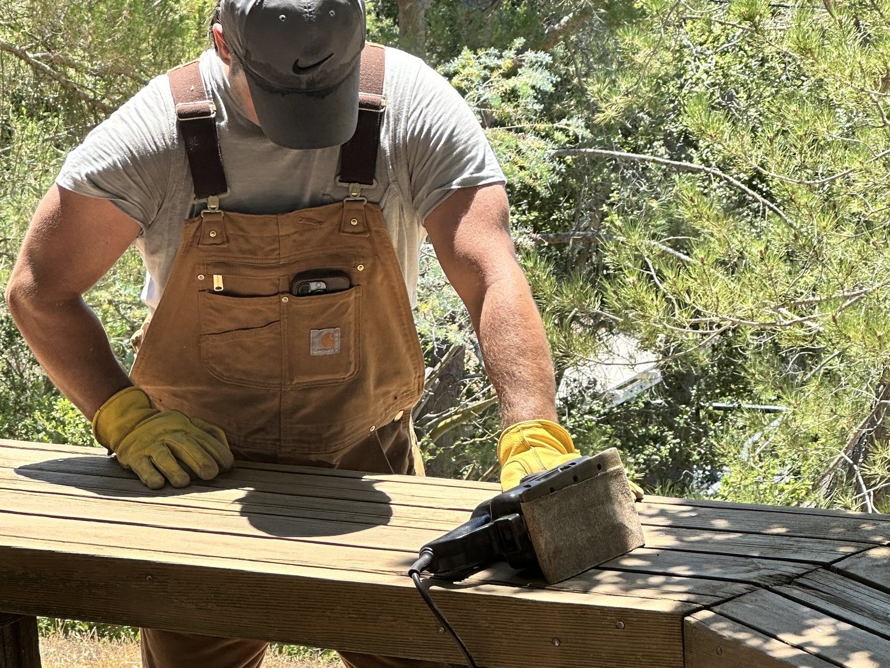
Exterior repairs
Clean exterior repair work that holds up over time.

Finish and reset work
Boards, railings, and exterior details cleaned up right.
What we handle
This is the real mix: repairs, exterior cleanup, carpentry, punch-list work, and the weird homeowner stuff that still needs somebody dependable to show up and knock it out.
Repairs
Carpentry
Punch lists
Small builds
Service areas
If you are looking for a handyman in San Jose, Santa Cruz, Monterey, Salinas, or Morgan Hill, this is the core service area Big Iron covers for repair, carpentry, and exterior work.
San Jose
Morgan Hill
Santa Cruz
Salinas
Monterey
Also serving
More Recent Jobs
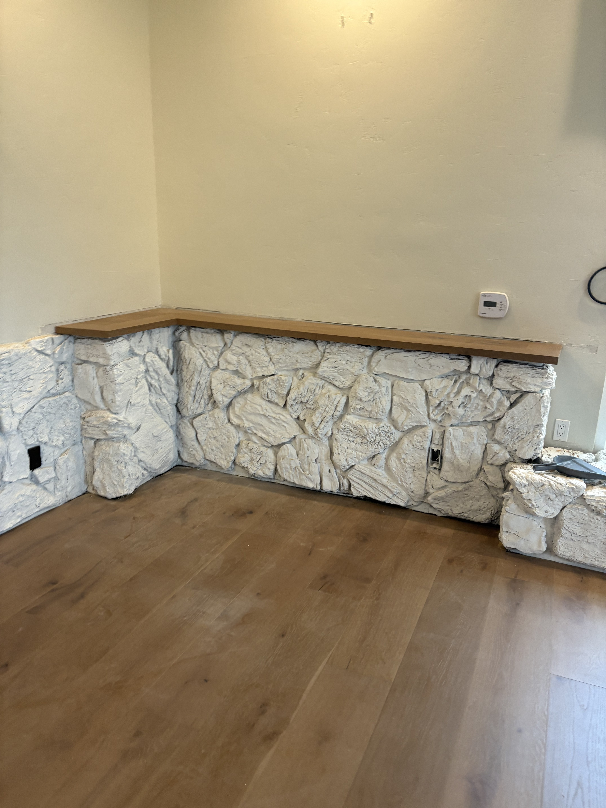
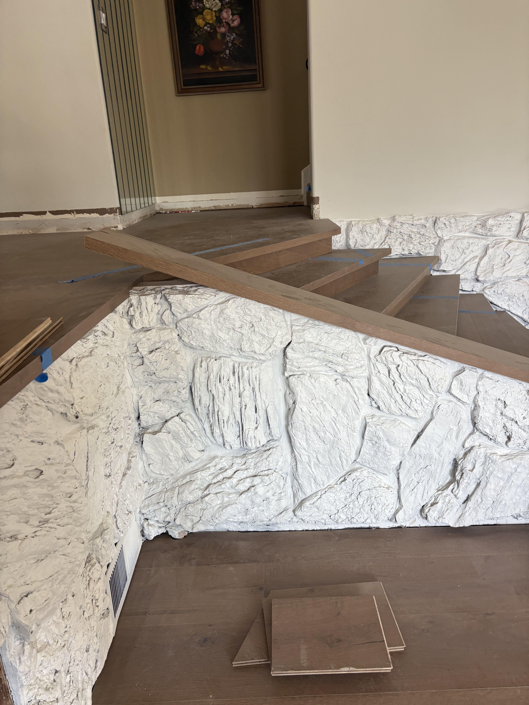
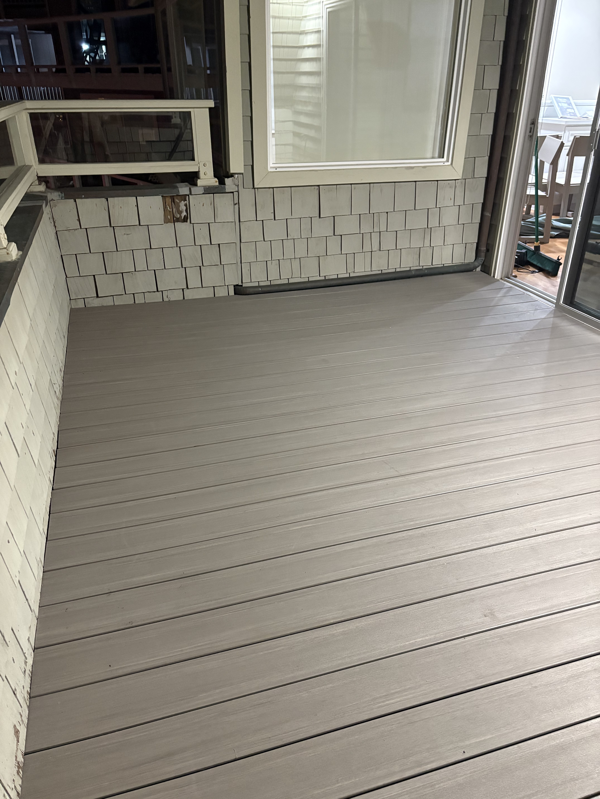


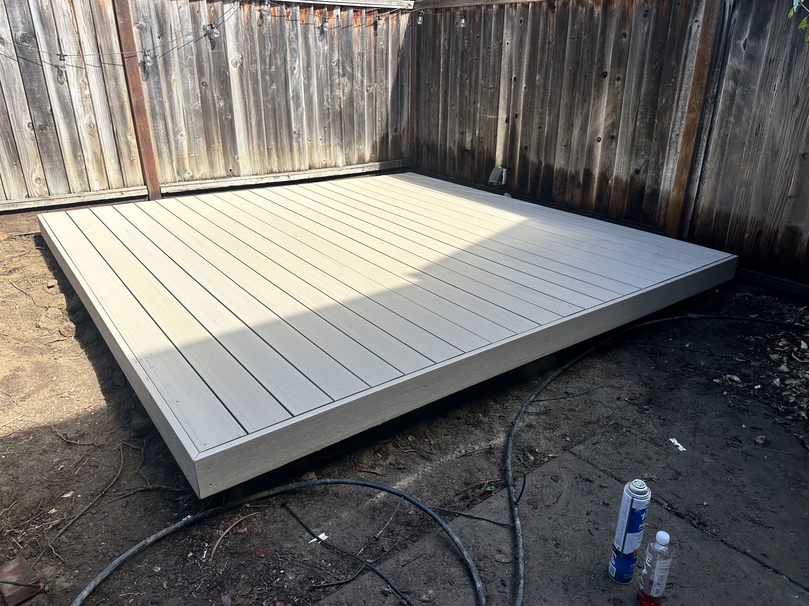
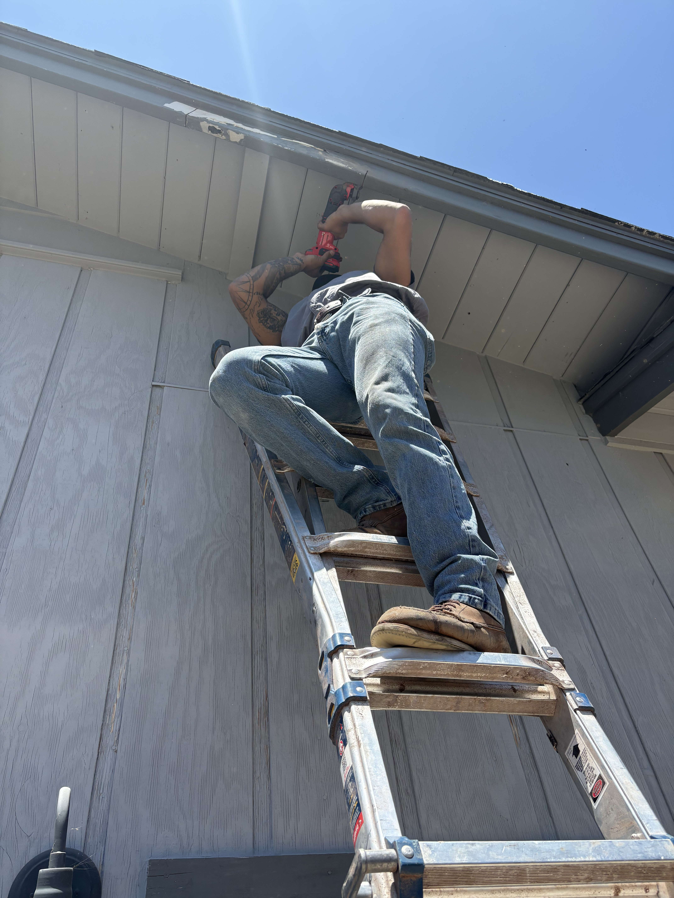
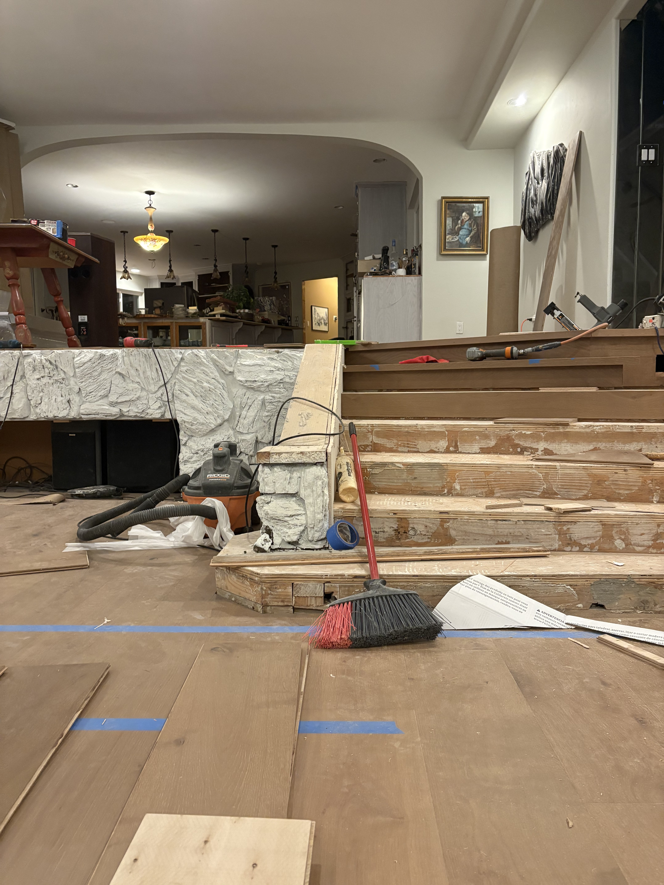

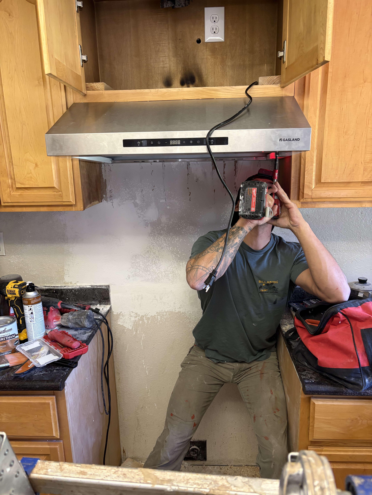
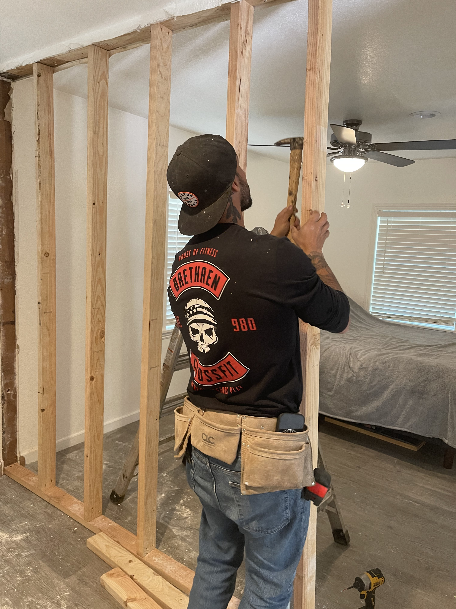
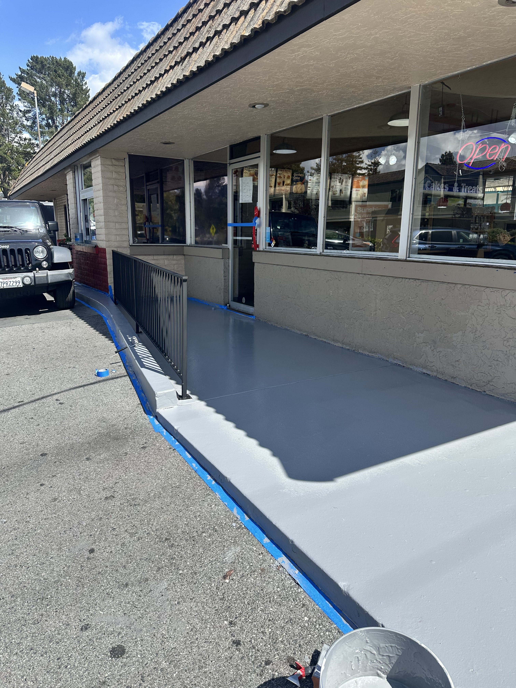
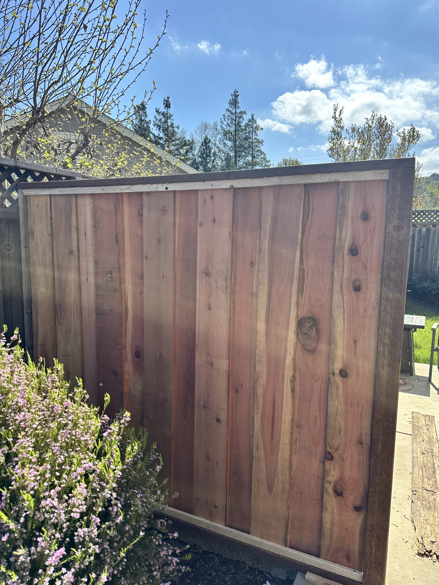
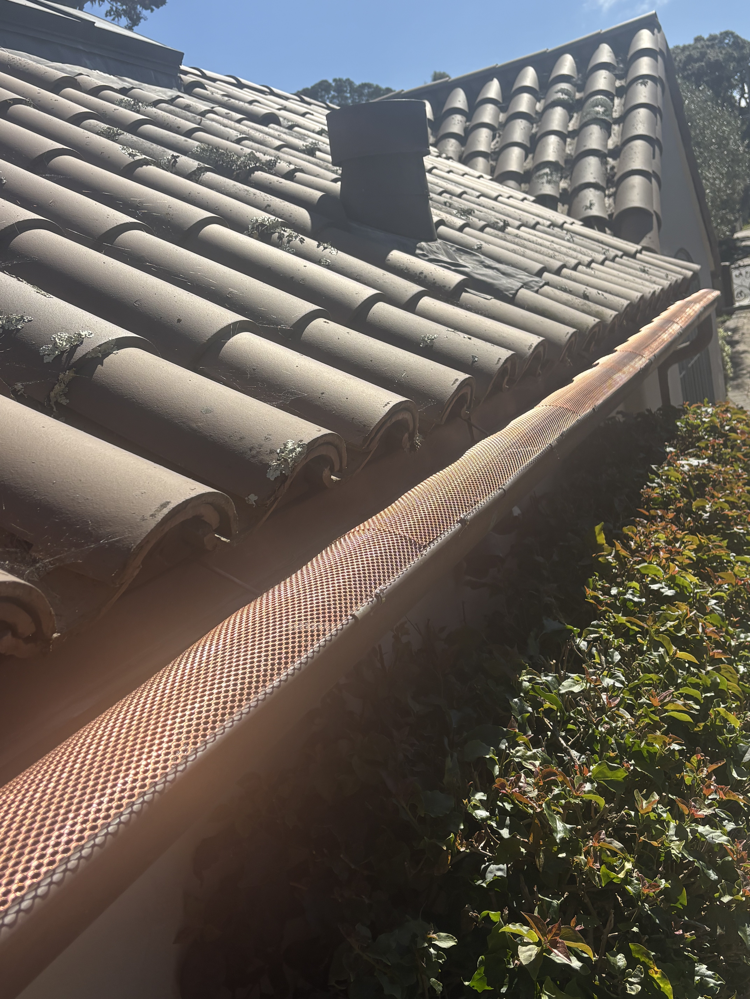

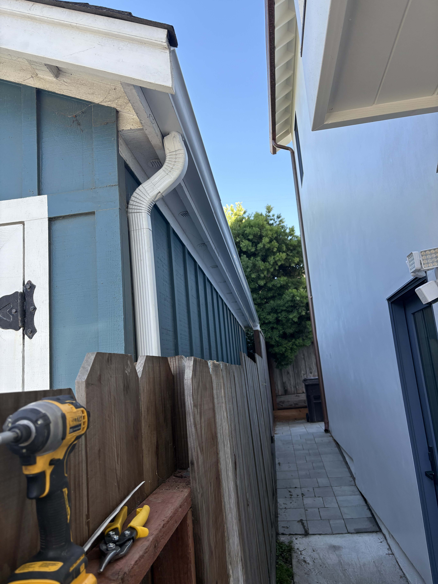
Reviews
“They fixed a section of fence that had been leaning for months and got it done way faster than I expected. Everything feels solid now and the cleanup was great.”
Claire D. Atherton“Danny and Derek were both super communicative, showed up when they said they would, and clearly knew what they were doing. Easy 10/10 recommendation.”
Marcus R. Los Gatos“We had a mix of little exterior repairs and finish work that had been piling up. They knocked it out in one visit and the place honestly looks better than I expected.”
Elena V. Woodside“From the first message to the final walkthrough, Derek made the whole project feel easy. Clear communication, fair pricing, and really solid work.”
Jordan M. Los Altos“Danny helped us with a handful of repairs around the house and every one of them was done right. Professional, efficient, and easy to work with.”
Rachel T. Palo Alto“They repaired trim, tightened up a gate, and handled a few problem spots we had been ignoring forever. Super experienced crew and very respectful of the property.”
Amir S. Menlo ParkReady when you are